[2]
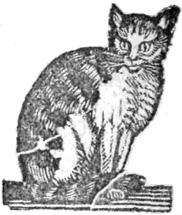
THE CAT
The cat is a very useful domestic animal. She destroys the rats and mice, which otherwise would do much injury. God has formed her to live among men. How soft her fur is! How quietly she lies and purs when she is treated kindly! How patiently she will sit, for many hours together, and watch for her prey! It would be well if little boys and girls would sit as still while they are learning their lessons.
[3]
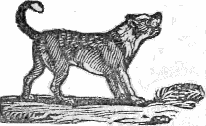
THE DOG.
The Dog takes care of his master’s property; he follows him about, and will not let any body hurt him. Should a stranger come, he barks, to let his master know it. He is easily taught a great many useful things. A shepherd’s dog will not let the sheep go astray. It would be well if little boys and girls were always as faithful to their parents as the dog is to his master.
[4]
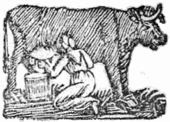
THE COW.
The cow is a very valuable animal, and useful in many ways. I dare say you like to have her milk for breakfast, and to eat sometimes a piece of beef at dinner. The skin is tanned and made into shoes; the horns are made into many useful articles; the bones make combs, and many other things, nearly as well as ivory; the hair is used in making mortar, with which our houses are plastered and made warm. How wonderfully has God provided for the convenience of man.
[5]
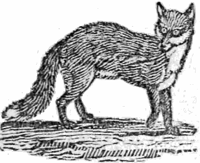
THE FOX.
The Fox is a cunning and mischievous animal. He is troublesome to the farmer, frequently killing his geese and chickens. People are obliged to go, in great numbers, sometimes, to hunt them out of their holes and hiding places.—Do you remember what our Saviour said of himself? “The foxes have holes, and the birds of the air have nests, but the Son of man hath not where to lay his head.“
[6]
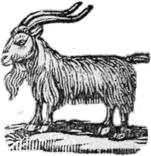
THE GOAT.
The Goat is a useful animal when tamed, and it is very cruel for little boys to teaze them. Their milk is very wholesome, though not as good as that of the cow. “The high hills are a refuge for the wild goats.” When Saul persecuted David, he was forced to hide among the rocks where the goats were found. Read 1 Samuel, xxiv. 2.
[7]
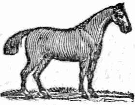
THE HORSE.
The horse is a noble and useful animal. He is very strong and active. The Psalmist says, “Some trust in chariots, and some in horses; but we will remember the name of our God.” This is to teach us not to trust in any thing in this world, however good or great it may be, but to look to God alone for strength and protection.
[8]
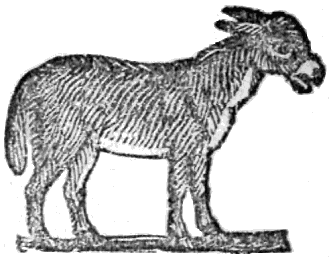
THE ASS
In eastern countries, the Ass is a much larger and stronger animal than it is here. It is not easily tamed, but it is very useful, and one of the most patient of beasts when it is tamed. Job says, “Vain man would be wise, though man be born like a wild ass’s colt.” Job, xi. 24. For we are all naturally inclined to do what is evil and wrong, unless our hearts are subdued by the power of divine grace.
[9]
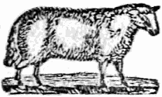
THE LAMB.
In the Bible, Christ is compared to a lamb, because lambs were sacrificed as an offering for sin. John the Baptist pointed out Christ to his disciples, and said, “Behold the Lamb of God, that taketh away the sin of the world.”—Think upon what Christ suffered for you, and pray that you may love him, and that he would cause you to hate sin, and to do his will.
[10]
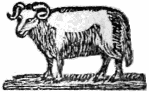
THE SHEEP.
When Sheep wander from their fold, they will not find their way back again at night, unless they are driven home. Dogs, and many other animals, can find their way home, but sheep cannot find their way to their fold. “All we, like sheep have gone astray.” Christ is the good Shepherd; he will take care of those who love him; for he laid down his life for his sheep.
[11]
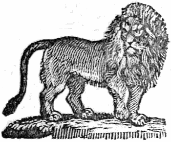
THE LION.
The Lion is one of the strongest and fiercest of wild beasts. The Bible says, “The righteous are bold as a lion.” But wicked men are strong also: the Psalmist prayed that God would “save him from the lion’s mouth.” You recollect about Daniel in the lions’ den;—God sent an angel and shut the lions’ mouths.
[12]
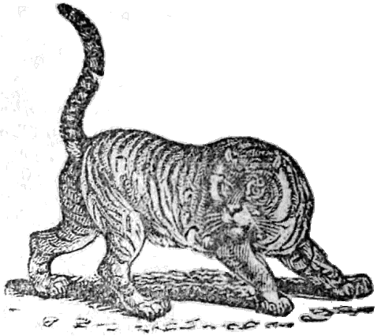
THE TIGER.
The Tiger is a native of Africa. He is a very fierce beast. Angry persons are often compared to the tiger; and certainly they resemble furious wild beasts. Perhaps they do not intend to do harm, but they often do a great deal of mischief; therefore “leave off contention before it be meddled with.”
[13]
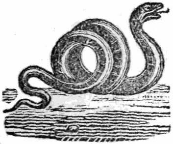
THE SERPENT
“O what an ugly Serpent!” says some little boy or girl who is reading this book. Do you remember who it was that took the form of a serpent, and tempted our first parents to sin against God? Read the account of it in the third chapter of the book of Genesis; and remember, when you sin against God, you resemble the “old serpent, the Devil.”
[14]
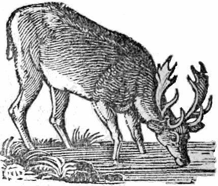
THE REINDEER.
The Reindeer is an inhabitant of cold countries. The Laplanders find them very serviceable; they draw their sledges over the snow and ice for them, and their skins make a warm covering from the cold. How wonderful are the works of God! There is nothing made in vain.
[15]
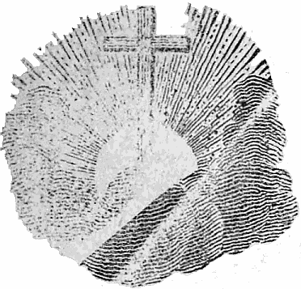
The prophet Isaiah tells us, that “the wolf shall dwell with the lamb, and the leopard shall lie down with the kid, and the calf, and the young lion, and the fatling together, and a little child shall lead them.” Isaiah xi. These words foretell that [16] blessed time when Satan shall be chained for a thousand years, and Christ shall reign throughout the earth. That period is called the Millenium.
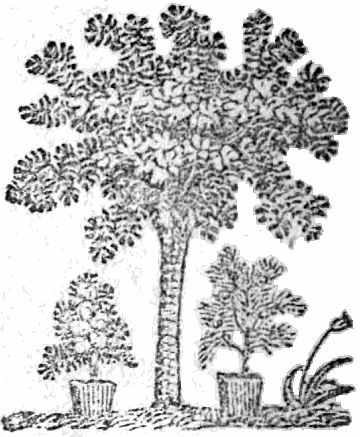